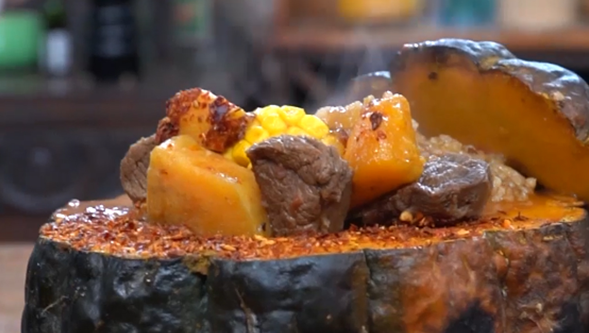

Carbonada en zapallo

Ingredientes
- 1 ½ k de carne vacuna (palomita) cortada en cubos.
- 2 cebollas de verdeo, picadas.
- 2 cebollas blancas, picadas.
- Un pimiento verde cortado en cubos.
- Un pimiento rojo cortado en cubos.
- 2 dientes de ajo picados, conservados en aceite.
- Un camote grande cortado en cubos.
- 2 choclos hervidos cortados en rodajas.
- Una taza de arroz.
- Un l de caldo de carne.
- 6 duraznos en almíbar.
- 3 tomates pelados cortados en cubos.
- ½ cazuela de damascos secos.
- Una cda de ají molido.
- 2 tazas de salsa de tomates.
- Un zapallo tipo criollo.
- Aceite de girasol.
- Pimienta blanca.
- Sal fina.
Procedimiento
- En un disco caliente colocar aceite de girasol. Incorporar los dos tipos de cebolla, los dos tipos de
pimientos y el ajo. Salpimentar. Agregar la carne vacuna. Mezclar y cocinar hasta sellar la carne.
- Incorporar el camote, los choclos y el arroz. Mezclar. Cubrir con el caldo de carne y calentar a fuego
moderado durante 10 minutos.
- Agregar al disco los duraznos, los cubos de tomate y los damascos. Mezclar. Condimentar con el ají
molido. Incorporar la salsa de tomates. Mezclar y cocinar lentamente.
- Cortar una tapa al zapallo y ahuecar el resto con ayuda de una cuchara afilada.
- Salar ligeramente el zapallo por dentro y llevar a horno de barro. Asar a las brasas.
- Rellenar el zapallo con la carbonada y servir.